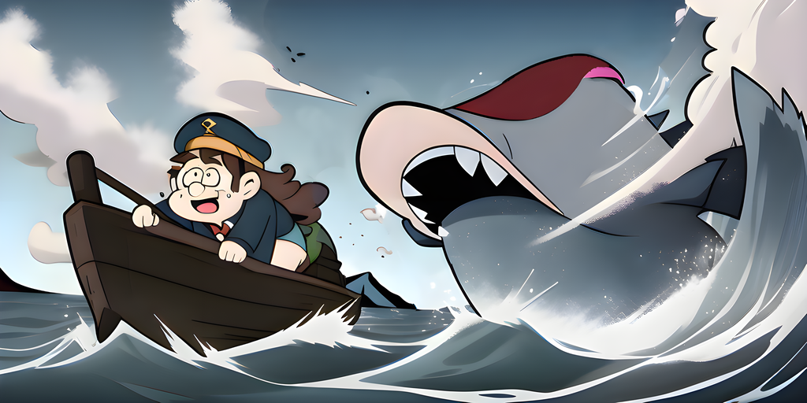

v1.2 - Sea Change

Moby has grown a little too big.
Docker
Split the carapace container into several smaller ones.
Compose
Updated compose services with the new docker containers. Also added services for specific tools.
Zsh
Reworked the handling of quoted values.
VHS
Added VHS tapes to verify the shell integration.
Variable
Extracted the set-env <NAME> <VALUE> completion as generic action.
Completions use the local environment so there are some limitations.
Spec
In specs it can be used as attached (default) or positional completion.
# yaml-language-server: $schema=https://carapace.sh/schemas/command.json
name: variable
completion:
positional:
- ["$carapace.env.NameValues"] # attached (NAME[=VALUE])
- ["$carapace.env.NameValues(true) ||| $shift(1)"] # positional (NAME)
- ["$carapace.env.NameValues(true) ||| $shift(1)"] # positional (VALUE)
- Use
shiftto skip previous arguments during positional completion.- Renamed
env.KnownEnvironmentVariablestoenv.Names.- Renamed
env.EnvironmentVariableValuestoenv.Values.
Unfiltered
Added CARAPACE_UNFILTERED environment variable to skip the final filtering step.
This enables fuzzy completion in fish (to a degree), but is limited to mostly static values.